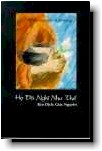

BuddhaSasana
Home Page
This document is written in Vietnamese, with Unicode
Times font
|  |
Họ đã nghĩ như thếTuyển
tập các bài viết của các vị đệ tử người Tây phương Tỳ kheo Giác Nguyên dịch ViệtNhà
Xuất Bản Pháp Luân, Houston, Texas, Hoa Kỳ |
|
Nguyên tác:
Seeing the Way - Buddhist Reflections on the Spiritual Life,
Người Tây Phương đã có những công trình nghiên cứu đạo Phật một cách qui mô vào cuối thế kỷ 19. Những học giả người Anh, người Ðức, tiêu biểu nhất là những hội viên của Pali Text Society và Royal Asiatic Academy đã để lại những dịch phẩm, tác phẩm mà đến nay vẫn mang giá trị to lớn cho Phật học thế giới. Một số cá nhân đi xa hơn, trở thành những tu sĩ Tây phương tại các quốc gia Phật giáo. Họ tìm thấy môi trường tu tập tuyệt vời khi sống giữa những người Phật tử Á Ðông . Cuối thế kỷ 20, lịch sử Phật giáo sang trang một cách bất ngờ. Khởi nguồn từ một vùng đất nghèo cằn cỗi của vùng đông bắc Thái Lan, tỉnh Ubon-rachathani. Ngày ấy, vị thiền sư tiếp một khách Tăng trẻ từ xa đến xin được tham học đạo thiền. Ðó chỉ là lời khẩn khoản bình thường. Nhưng chính vị khách Tăng không giống bất cứ thiền sinh nào đã đến cầu pháp từ trước. Là một người Hoa Kỳ, sau khi tốt nghiệp đại học, ông đã chọn phục vụ trong chương trình Peace Corp. Nhân duyên đưa đẩy ông tiếp xúc với đạo Phật, sau đó trở thành Tăng sĩ Phật giáo. Nghe danh Ngài thiền sư, vị tu sĩ người Mỹ nầy đến xin được hướng dẫn. Câu trả lời của vị thiền sư là: "Ðược, nhưng với điều kiện là phải chấp nhận sự đối xử như bao nhiêu người khác chứ không có một biệt đãi nào." Câu nói chừng như vô tâm ấy về sau đã nở hoa kết trái. Kéo theo là một loạt những người ngoại quốc đến từ nhiều quốc gia khác biệt ngôn ngữ, văn hóa cùng tìm về tu học. Họ học Phật, tu thiền khách quan, không qua ảnh hưởng của văn hóa địa phương. Là người mới vào đạo, họ chân thành tinh tấn. Ngày nay, những tu viện của họ rãi rác ở Âu Châu, Bắc Mỹ và Úc Châu đã xây dựng nền tảng cho tổ chức Tăng lữ Tây Phương. Họ học ở Ðông phương rất nhiều mà cũng có nhiều điều để chúng ta học lại ở họ. Người Phật tử Việt tại quốc gia tự do chắc hẳn có nhiều lợi lạc qua những kinh nghiệm quí báu ghi chép trong quyển sách này. Nguyên tác được thực hiện như một sưu tập những tùy bút của nhiều Tăng sĩ. Dĩ nhiên không có dụng ý sáng tác một tác phẩm văn học. Tuy vậy đọc bản dịch chúng ta sẽ thưởng thức được bút pháp tài hoa của người chuyển ngữ. Ðiều nầy chắc chắn làm tăng phần giá trị của tác phẩm . Mặc dù dịch giả có hơn mười tác phẩm, dịch phẩm đã thực hiện, đây chỉ mới là công trình thứ hai được xuất bản tại Hoa Kỳ. Ước mong bản dịch nầy sẽ tạo thiện duyên cho những công trình khác sớm được xuất bản. Tin rằng độc giả xa gần cùng chia sẻ tâm trạng náo nức chờ đợi ấy của chúng tôi sau khi đọc quyển sách nầy . Pháp Luân, mạnh đông Kỷ Mão Cuốn sách được chọn dịch, ấn hành (tại Việt Nam) rồi sửa chữa, tái bản (tại Hoa Kỳ) chỉ vì một nội dung giáo lý dễ đọc, có thể không làm phiền ai hết. Sách được viết thiệt thà, với tinh thần trách nhiệm và không hề đứng trên một lập trường nào để sùng bái hay đạp đổ ai. Ðó chẳng là những gì mà từng người chúng ta vẫn mong đợi đấy sao? Cuốn sách được chuẩn bị tái bản vào một ngày giáp đông. Ngồi giữa trời đất phương Tây đọc lại từng trang sách của những tác giả Tây Phương viết về phương Ðông, trong một thoáng mơ hồ, tôi đã thấy mình có lỗi. Lỗi với Ðời vì chưa hề đem vào cõi phù sinh này một đóng góp nào. Lỗi với Ðạo vì manh áo truyền thừa trên vai chỉ vừa đủ che kín những vọng niệm hãy còn trùng điệp. Và có lỗi với chính mình vì đã nửa đời vẫn chưa có nổi một đạo nghiệp: dấn thân không tìm ra chỗ đến, quy ẩn không có được một chốn về . Những trang sách này thật ra đã đề nghị với tất cả chúng ta một nếp sống không lầm lỗi, không hối hận. Giữa cõi vô thường, gì cũng ngắn ngủi, mong manh. Hãy cầm lấy cuốn sách như một ngọn lửa sưởi ấm và chia sẻ. Cuộc đời đã bắt đầu vào Ðông rồi đó. Tuyết đã rơi trên những tim người, gió đã lùa qua những lòng người. Thiên niên kỷ mới sắp đến, chúng ta lại đang đi vào một mùa đông khác ... Houston, mùa Ðông 1999 -ooOoo- |
Nguyên tác Anh ngữ: Seeing the way
Chân thành cám ơn Tỳ kheo Giác Ðẳng đã gửi tặng phiên bản điện tử (Bình Anson, 04-2001)
last updated: 01-10-2003